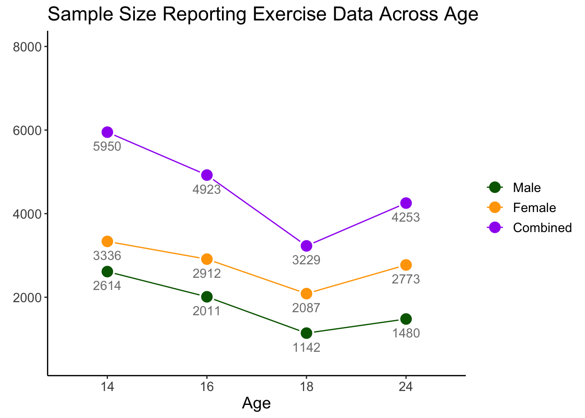

Chapter 4 The ALSPAC Cohort
The ALSPAC Cohort (Boyd et al. 2013; Fraser et al. 2013) was established to understand how genetic and environmental characteristics influence health and development in parents and children. Ethical approval for this study was granted by the ALSPAC Law and Ethics Committee and Local Ethics Committees. All pregnant women living in the geographical area of Avon, United Kingdom, who were expected to deliver between April 1, 1991 and December 31, 1992, were invited to participate in the study. Children from 14,541 pregnancies were enrolled; 13,988 children were alive at 1 year. An additional 913 children were enrolled during subsequent phases of enrollment, with a total sample size alive at 1 year of 14,901. All women gave informed and written consent. Among twin pairs, one twin per pair was randomly excluded from the current study.
A fully searchable ALSPAC data dictionary is available here.
4.1 Sample Size
The sample size is defined for the current study as the number of individuals of each gender reporting exercise for weight loss data from ages 14-24 years. Sample size ranged from 3229 (age 18) to 5950 (age 14), with slightly more female than male participants responding at all time points. Across all time points, 3319 Male, 4360 Female, and 9 participants not reporting gender completed at least one assessment of exercise for weight loss (Total N = 7688). Participants reporting exercise for weight loss data at one or more time points were included in analyses. A graph of sample size at each age is presented below:
